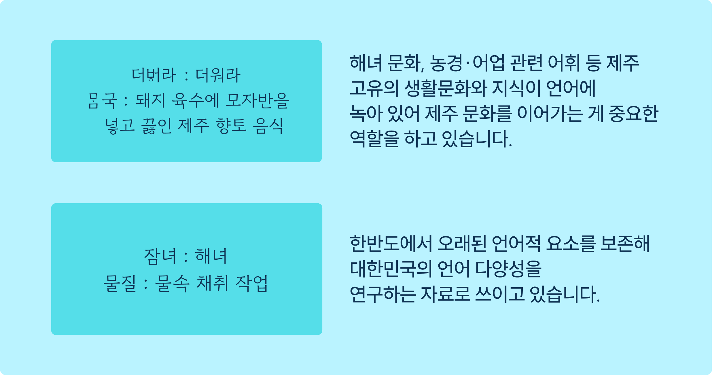
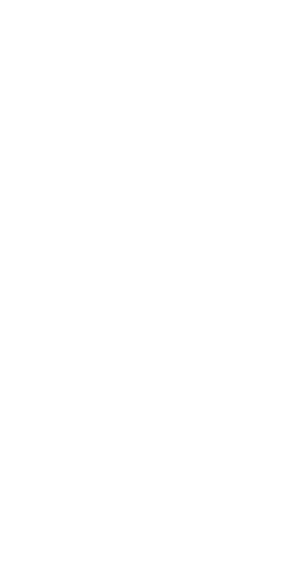
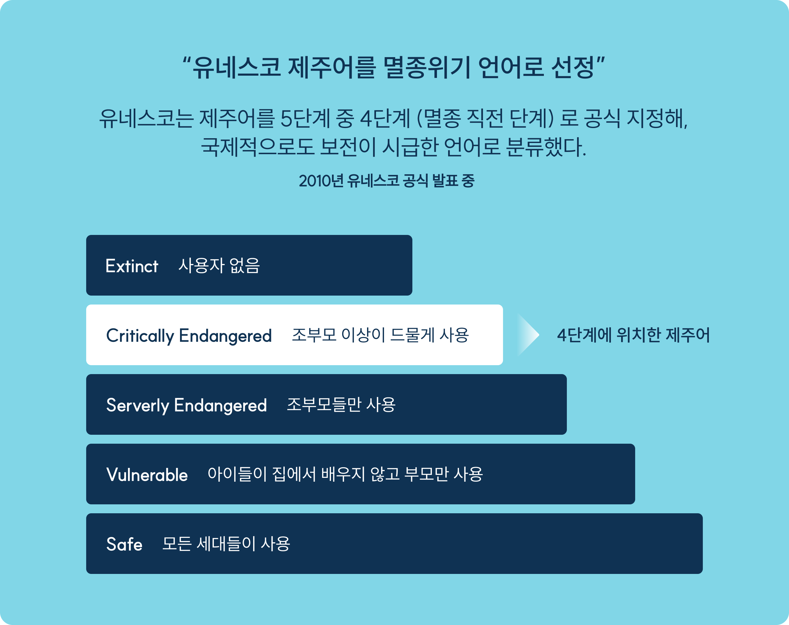
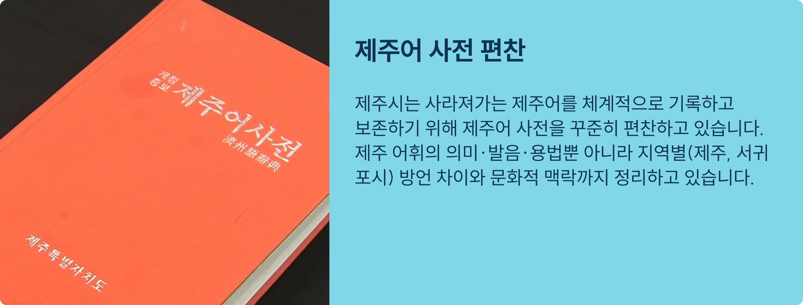
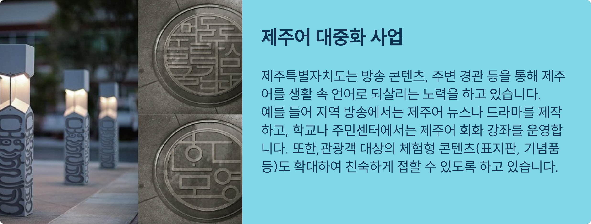
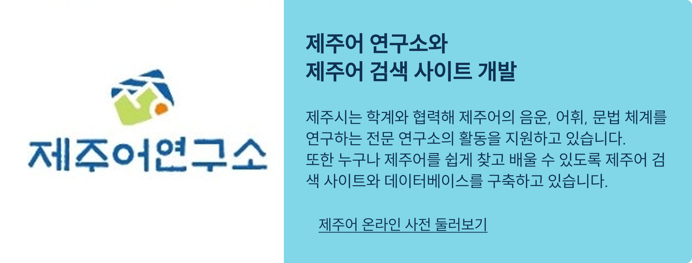

소멸 위기에 처한 제주의 사투리
제주어는 제주도에서 사용되는 독특한 방언이자,
매우 오래된 고어와 제주의 독특한 자연·문화를 담고 있는 언어입니다.




그러나, 제주어는 이제
고령층만 사용하는 언어가 되어
서서히 기억 속으로 사라지고 있습니다.
소멸을 늦추기 위해, 제주도는 제주어 보존을
위한 다양한 노력을 하고 있습니다.



소멸 직전에 놓인 제주어를 지키기 위해서는
우리의 실질적인 관심이 더욱 필요합니다.
제주어, 한 번 경험해보실래요?